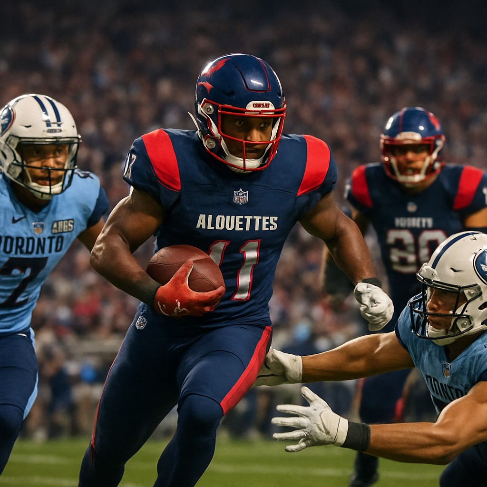

In a thrilling weekend of Canadian Football League action, the Montreal Alouettes delivered a dramatic victory over the Toronto Argonauts, while the Hamilton Tiger-Cats edged out the Winnipeg Blue Bombers in a hard-fought contest.
Montreal Alouettes 37, Toronto Argonauts 30
The Alouettes emerged victorious in a high-scoring affair that saw both teams trade blows throughout the game. Montreal's win was especially surprising given the pre-game odds which had the Argonauts as +270 underdogs, with the Alouettes favored at -192. The game's outcome defied expectations, as Toronto’s offense struggled to capitalize on key opportunities, ultimately falling short despite their efforts.
Montreal’s ability to convert in the red zone and maintain strong defensive pressure proved decisive. The game’s total of 67 points surpassed the projected over/under of 51.5, highlighting the offensive firepower from both sides.
Hamilton Tiger-Cats 37, Winnipeg Blue Bombers 27
In the second game of the weekend, the Hamilton Tiger-Cats took down the Winnipeg Blue Bombers in a tight battle. Hamilton’s victory was more in line with expectations, as they were favored by 2 points according to the spread line (-125 for Hamilton, -125 for Winnipeg).
The Tiger-Cats’ balanced attack and solid execution on defense helped secure the win, with Hamilton’s offense managing to stay ahead of Winnipeg’s late-game surge. The final score of 37-27 exceeded the projected total of 52.5 points, underscoring the competitive nature of the matchup.
Looking Ahead
With these results, Montreal moves closer to contention while Hamilton continues its push toward the playoffs. Both teams now look ahead to their upcoming matchups, including the highly anticipated clash between Montreal and Toronto scheduled for June 13th.
As the CFL season progresses, these wins set the stage for crucial battles in the standings, with momentum shifting rapidly across the league.